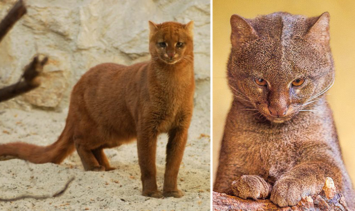

Дикие кошки, которых можно заводить дома.
Каракал.

Карака́л, или степная рысь (лат. Caracal caracal, от тюрк. qara qulaq — «чёрное ухо»), — хищное млекопитающее семейства кошачьих. Долгое время каракала относили к рысям (Lynx), на которых он похож внешне, однако из-за ряда генетических особенностей его выделили в отдельный род. Несмотря на это, каракал всё же немного ближе стоит к рысям, чем другие кошки, при этом будучи гораздо ближе к пуме по морфологическим признакам. Близок каракал и к африканскому сервалу, с которым хорошо скрещивается в неволе.
Ягуарунди.
Ягуару́нди (лат. Puma yagouaroundi) — вид хищных млекопитающих семейства кошачьих.Ранее вид выделяли в отдельный род Herpailurus, сейчас включают в род Пумы.
Жоффруа.
Кошка Жоффруа (лат. Leopardus geoffroyi или Oncifelis geoffroyi) — распространённый в Южной Америке вид из семейства кошачьих (Felidae). Видовой эпитет дан в честь французского зоолога Этьена Жоффруа
Сервал.
Сервал — стройная, длинноногая кошка средних размеров. Длина тела 90—135 см, высота в плечах до 40—65 см; весит взрослое животное от 8 до 18 кг. Сервал обладает самыми высокими лапами и самыми большими (относительно размеров тела) ушами среди кошачьих. Голова у него миниатюрная; хвост относительно короткий — 30—45 см.
Бенгальская кошка
Бенгальская кошка, бенгал — межродовой гибрид домашней кошки (Felis catus) и собственно бенгальской кошки (Prionailurus bengalensis).